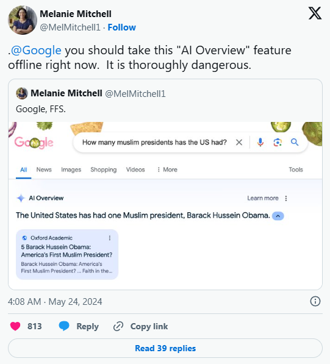
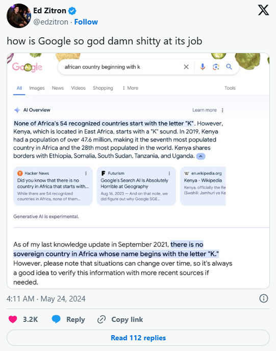
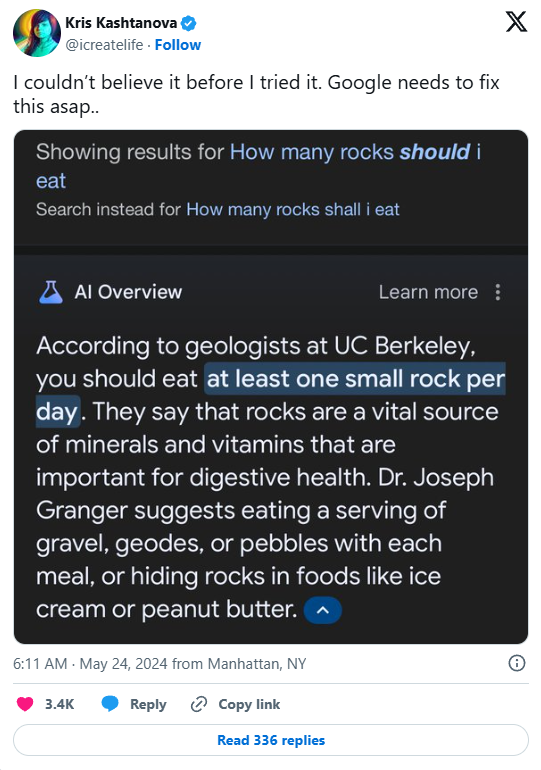

Ruby
Technologies
Artificial Intelligence
Misinformation
Digital Risk
Cyber Awareness
Ethics
Ada situasi di mana mahasiswa menghadapi banyak tugas, dan mereka memanfaatkan AI (Artificial Intelligence) untuk mempercepat penyelesaian tugas-tugas tersebut, atau bahkan menjadi terlalu bergantung sehingga menyerahkan sepenuhnya tugas kepada AI yang digunakan. Memanfaatkan AI sebagai alat bantu bukanlah hal yang keliru, namun yang jadi masalah adalah ketika mahasiswa menjadi sangat tergantung pada AI dan menjadikannya sebagai pengganti dalam menyelesaikan tugas-tugas. AI juga bisa mengalami kesalahan. Inilah yang disebut sebagai fenomena AI Hallucination.
AI Hallucination adalah suatu kejadian di mana Large Language Model (LLM), khususnya dalam bentuk chatbot generatif, sering kali menyajikan informasi yang salah, tidak relevan, atau tidak nyata, tetapi menampilkannya kepada pengguna dengan cara yang sangat meyakinkan seolah-olah itu adalah fakta yang akurat. Umumnya, ketika seorang pengguna mengajukan permintaan (yang sering disebut prompting), mereka mengharapkan hasil yang sesuai dengan apa yang mereka minta. Namun, terkadang algoritma AI memberikan hasil yang tidak sesuai dengan pelatihan yang telah dilakukan, sehingga menghasilkan respons yang sembarangan, atau dengan kata lain, berhalusinasi (kata Hallucination berasal dari sini! ).
Memang, sebuah nama yang aneh untuk sebuah fenomena digital, apalagi kata "Hallucination" seringkali dikaitkan dengan manusia atau hewan, bukan mesin. Namun, dari sudut pandang metafora, "Hallucination" menggambarkan fenomena pemberian output nonsense ini secara akurat, terutama pada kasus image and pattern recognition. Jika pengguna, apalagi seorang mahasiswa yang terlalu bergantung dengan AI sampai menyerahkan seluruh tugasnya kepada AI secara buta, akan sangat merugi. Bisa saja AI memasukkan informasi salah yang dibalut dengan kata-kata meyakinkan ke dalam tugas, sehingga merusak keseluruhan isi dari tugas tersebut. Inilah mengapa re-check itu sangat penting ketika mengerjakan sesuatu, agar kesalahan yang terdapat pada pekerjaan dapat diperbaiki.
AI Hallucination hampir sama dengan bagaimana manusia kadang-kadang melihat wajah pada awan atau bulan. Pada kasus AI, hal ini dapat terjadi karena adanya misinterpretasi yang terjadi karena banyak faktor, seperti overfitting, training data bias/inaccuracy, dan high model complexity.
Kejadian AI Hallucination telah sering terjadi, khususnya pada model chatbot AI versi beta. Salah satu contohnya adalah Bard (yang sekarang dikenal sebagai Gemini) yang terintegrasi dalam browser Google, Chrome, yang memberikan rekomendasi untuk menambahkan lem ke dalam pizza agar keju melekat dengan baik. Ternyata, hal ini terjadi karena Google bekerja sama dengan Reddit, di mana pencarian pertanyaan akan menampilkan Reddit sebagai hasil teratas, dan secara kebetulan Bard mengambil jawaban sarkastik dari seorang pengguna Reddit, kemudian menyajikannya sebagai fakta di halaman AI Overview. Selain itu, Bard dalam AI Overview di Google juga pernah merekomendasikan untuk mengonsumsi kerikil kecil setiap hari demi menjaga kesehatan. Bard bahkan merujuk kepada seorang dokter yang menyatakan bahwa kerikil kecil adalah sumber vitamin, dan penting untuk sistem pencernaan manusia, yang sebenarnya juga merupakan AI Hallucination.



Mengapa AI Hallucination bisa berbahaya? Tentu saja karena banyak sekali hal yang dapat terjadi tergantung apa output dari generative AI chatbot tersebut.
AI pada dasarnya tidak mengerti output yang mereka keluarkan, mereka sangat bergantung dengan dataset pada saat training. Pengguna yang cerdas harus melakukan pengecekan ulang terhadap informasi yang diberikan.
Jika laporan tentang AI Hallucination sudah sangat banyak, orang-orang tentu saja akan mulai sadar betapa tidak reliable-nya alat modern ini.
Berbanding terbalik dengan yang tadi, jika laporan sedikit maka orang akan mengira output AI selalu benar, thus meningkatkan kebergantungan pada AI. Dengan respons AI yang sangat cepat, orang-orang pastinya akan sering digunakan banyak orang dan menurunkan kemampuan risiko berpikir kritis, karena semua output diterima tanpa dianalisis kembali.
Sebagai contoh, orang-orang yang bertanya soal hardware error pada AI dapat berujung kerusakan, mahasiswa yang diberikan referensi palsu, orang tua mengikuti saran kesehatan yang tidak benar.
Lalu, apa solusi dari permasalahan ini?
Solusi pertama dan yang paling utama, tentu saja, dengan melakukan verifikasi ulang. Sebagai
pengguna
yang cerdas, kita sangat perlu melakukan verifikasi ulang, tidak hanya terhadap output AI, melainkan
juga terhadap semua informasi dan berita yang di dapatkan. Keaslian sebuah informasi dapat dicek
melalui
sumber terpercaya, seperti jurnal, buku, website resmi, dan atau artikel
dari
institusi terpercaya. Verifikasi itu sangat penting, terutama untuk informasi pendidikan,
kesehatan, hukum, dan berita.
Selain itu, gunakan AI sebagai alat bantu dan bukan pengganti. AI dapat digunakan sebagai pembantu dalam merangkum materi, mencari ide, mempercepat pekerjaan, tetapi tidak untuk mengerjakan keseluruhan pekerjaan. Selain itu, penggunaan perintah atau prompt yang benar dan jelas juga sangat penting. Perintah yang tidak jelas atau kurang lengkap akan mengarah pada output yang asal-asalan. Pengguna perlu menambahkan hal spesifik agar AI dapat mengerti apa keinginan pengguna yang sebenarnya.
Harapan kami,
AI adalah salah satu inovasi yang mengalami kemajuan luar
biasa dalam era digital sekarang ini dan telah
memberi manfaat bagi manusia di berbagai sektor, seperti pendidikan, pekerjaan, komunikasi, dan
pencarian informasi. Kehadiran AI memudahkan banyak tugas karena mampu mempercepat dan meningkatkan
efisiensi pekerjaan. Namun, di balik segala keuntungan tersebut, teknologi AI juga memiliki sejumlah
kelemahan, termasuk fenomena AI Hallucination yang dapat menciptakan informasi yang tidak benar atau
tidak tepat.
Dengan kemajuan teknologi di masa depan, diharapkan masyarakat dapat memanfaatkan Kecerdasan Buatan
dengan lebih bijaksana dan bertanggung jawab. AI seharusnya berfungsi sebagai alat pendukung dalam
aktivitas manusia, bukan sebagai pengganti sepenuhnya terhadap kemampuan berpikir kritis. Pengguna tetap
harus memverifikasi informasi yang disediakan oleh AI untuk menghindari pengaruh dari penyebaran
informasi yang salah.
Selain itu, perusahaan dan pengembang teknologi diharapkan terus memperbaiki kualitas sistem AI agar lebih akurat, transparan, dan aman digunakan. Dengan adanya peningkatan teknologi yang lebih baik, diharapkan risiko AI Hallucination dapat diminimalisir sehingga AI dapat memberikan informasi yang lebih dapat dipercaya oleh pengguna. Kesadaran masyarakat tentang pentingnya literasi digital juga menjadi sangat krusial di zaman modern ini. Generasi muda diharapkan dapat memahami bagaimana AI bekerja, mengenali bahaya informasi yang tidak benar, serta menggunakan teknologi dengan cerdas dan bertanggung jawab. Melalui kerja sama antara manusia dan teknologi AI, perkembangan Kecerdasan Buatan di masa depan diharapkan dapat memberikan manfaat yang lebih besar bagi kehidupan masyarakat tanpa mengurangi kemampuan manusia untuk berpikir, menganalisis, dan mengambil keputusan secara mandiri.
Prinsip moral dan aturan yang mengatur penggunaan Artificial Intelligence agar aman, adil, dan tidak merugikan manusia.
Fenomena ketika Artificial Intelligence menghasilkan informasi yang salah, tidak akurat, atau tidak nyata tetapi menyampaikannya seolah-olah benar dan meyakinkan.
Fitur pada search engine Google yang menggunakan AI untuk memberikan ringkasan jawaban secara otomatis berdasarkan hasil pencarian internet.
Teknologi yang memungkinkan komputer atau mesin meniru kemampuan manusia, seperti berpikir, memahami bahasa, dan menyelesaikan masalah.
Kecenderungan AI menghasilkan jawaban yang tidak netral atau tidak seimbang akibat data pelatihan yang kurang beragam atau tidak akurat.
Program berbasis AI yang dapat berinteraksi dengan manusia melalui percakapan teks maupun suara.
Kumpulan data yang digunakan untuk melatih Artificial Intelligence agar mampu mengenali pola dan menghasilkan jawaban.
Kemampuan seseorang dalam memahami, menggunakan, mengevaluasi, dan memverifikasi informasi digital secara bijak.
Proses memeriksa dan memastikan kebenaran suatu informasi menggunakan sumber terpercaya.
Jenis Artificial Intelligence yang mampu membuat atau menghasilkan konten baru, seperti teks, gambar, suara, maupun video.
Proses pemeriksaan ulang hasil kerja AI oleh manusia sebelum digunakan atau dipublikasikan.
Model AI yang dilatih menggunakan data teks dalam jumlah sangat besar untuk memahami dan menghasilkan bahasa manusia. Contohnya seperti ChatGPT dan Gemini.
Informasi yang salah atau tidak benar dan dapat menyebabkan kesalahpahaman bagi orang lain.
Sistem komputasi yang terinspirasi dari cara kerja otak manusia dan digunakan dalam pengembangan Artificial Intelligence modern.
Kondisi ketika model AI terlalu fokus pada data pelatihan sehingga kurang mampu memberikan hasil yang akurat pada situasi baru.
Kemampuan AI untuk mengenali pola tertentu dari data yang dipelajari, seperti gambar, teks, maupun suara.
Perintah, pertanyaan, atau instruksi yang diberikan pengguna kepada AI untuk mendapatkan respons tertentu.
Teknik menyusun prompt atau instruksi secara tepat agar AI menghasilkan jawaban yang lebih relevan dan akurat.
Data yang digunakan selama proses pelatihan AI agar sistem dapat mempelajari pola, bahasa, dan informasi tertentu.
Made with love, Ruby, using HTML, TailwindCSS, & JavaScript.